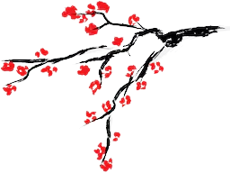
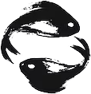
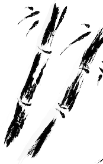
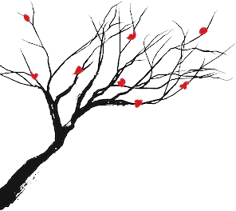
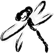
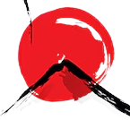
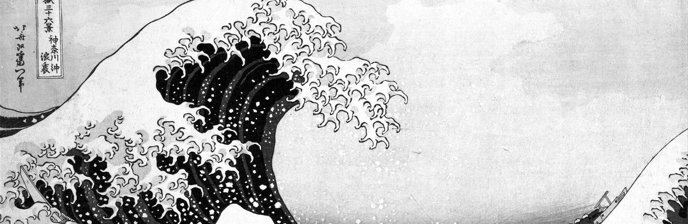
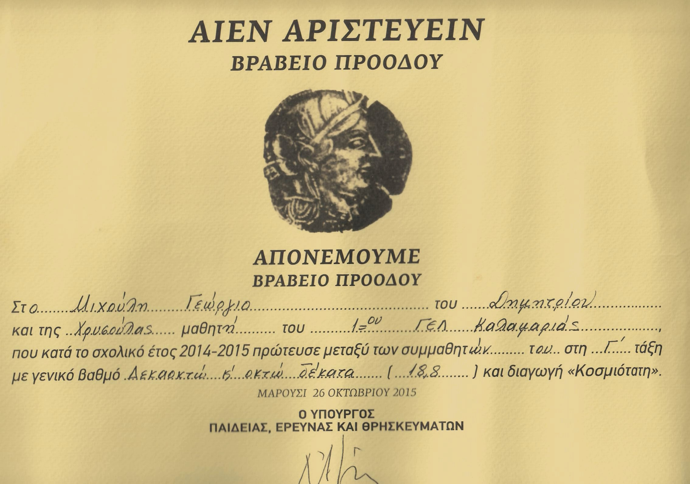

Where I come from
I live in Thessaloniki. I did my BSc in Applied Informatics at the University of Macedonia, with a thesis on verifying academic credentials on Ethereum.
Then came an MSc in Data and Web Science at the Aristotle University of Thessaloniki, funded by a DeepMind scholarship. My research there was on graph-embedding methods for detecting fraud on blockchains.
My work has three sides.
- Research
- Papers and startup work on how effective ledgers are, and on what they change in practice across blockchain systems.
- Build
- Web3 products, including NFTs and DeFi, and data science with graph embeddings. I ship in Solidity and TypeScript, and on the cloud.
- Teach
- I lecture in networks, security and application development, and I give public talks on Web3 and edge technology.
Where I’ve worked

the second scene · May 2026 to now
Web3 full-stack developer, Cyberscope by TAC
I build Web3 products end to end: the contracts, the on-chain integrations, the React and Next frontends, and the security tooling around them.
the third scene · 2024 to 2026
Blockchain developer and researcher, Sidroco Holdings Ltd
I built an NFT marketplace for 5G networks and prototypes on Hyperledger Fabric, and worked on an Erasmus+ learning management system, all inside multinational EU projects.


the fourth scene · 2023 to 2025
Lecturer and academic partner, University of Derby / Mediterranean College
I taught Networks and Security, Web Scripting and Application Development, and I designed assessments with inclusivity first.
the fifth scene · 2022 to 2024
Blockchain and full-stack developer, University of Nicosia / IFF
I built large Next.js, NestJS and Docker applications, and a Web3 NFT marketplace.


What I studied
MSc Data and Web Science
Aristotle University of Thessaloniki, 2020 to 2022, on a DeepMind scholarship.
BSc Applied Informatics
University of Macedonia, 2015 to 2020. My thesis was on verifying academic credentials with Web3.
Along the way
- DeepMind Scholarship, Aristotle University of Thessaloniki, 2020–2022
- Third place, Infinitech Hackathon by Crowdpolicy, June 2022
- Basic Research grant, University of Macedonia, 2020–2021
- Award at the Move/Sui Bootcamp in Thessaloniki, 2025

What I’ve written
Eight papers, from verifying degrees on Ethereum to marketplaces for 5G network slices. The number beside each title is how many times it has been cited.
- 32citationsA process-aware approach for blockchain-based verification of academic qualifications
Simulation Modelling Practice and Theory 121, 102642 · 2022
- 11citationsVerification of academic qualifications through Ethereum blockchain: an introduction to VerDe
XIV Balkan Conference on Operational Research · 2020
- 7citationsExploring decentralized governance: a framework applied to Compound Finance
Intl. Conference on Mathematical Research for Blockchain Economy · 2023
- 1citationFraMark: a blockchain marketplace for 5G network management using fractional NFTs
7th World Symposium on Communication Engineering (WSCE) · 2024
- 1citationData security for smart cities
2025
- 0not yet citedUnlocking 5G network slicing: a survey on blockchain marketplaces utilizing NFTs, AI, and advanced resource management
IEEE ICCE 2025 · 2025
- 0not yet citedGraph embedding and node features for drug-target interaction prediction
Aristotle University of Thessaloniki, MSc work · 2022
- 0not yet citedBlockchain in higher education: permissioned and permissionless approaches
4th Summit on Gender Equality in Computing · 2022
I also wrote two Greek-language theses on verifying academic titles with Ethereum, in 2020 and 2021. The current list is on my Google Scholar profile.
Certificates, mounted
Six of the degrees and certificates I keep on file, mounted as scans. The rest are listed by name below.




Also on file
- Introduction to digital currencies · achievement
- TOEIC listening and reading test · achievement
- English proficiency · certificate
- Move Bootcamp Thessaloniki · award
- Advanced ethical hacking
- Cloud engineering
- Rust developer
- Networking essentials
- Cybersecurity e-learning academy
- Software development for telecommunication networks
- NFT Talents program
- How to design and build a website
- The Hour of Code
- Digital skills for tourism
- Discover customer
- Entrepreneurship: funding and development of new enterprises
- European Legal Culture program, Aristotle University of Thessaloniki
- Blockchain for the legal industry: how is the… · participation
- Blockchain in education: remote learning, social distancing and… · participation
- Data analytics to strengthen healthcare cybersecurity · participation
- VeChain ToolChain: digital transformation of the healthcare industry · participation
- Processing data in the fog: the example of… · participation
- Launch event, RippleX workshop · participation
- EY Cyber Day · participation
- GNU/Linux command line · participation
- SKGcode project: creation of a real estate chatbot · participation
- Marine educational robotics, Hydrobot program · participation
- MIGMA marketing kai brand · participation
Sites I’ve built
Screenshots of sites I built, each labelled with its address.